写在前面：本篇主要为原创内容，转载请保留原文链接。如有错误欢迎联系cugliyue@163.com指正。
- noteexpress 可以用来保存文献引用信息，插入附件，添加笔记等，主要功能是可以在写论文时，管理最后的参考文献。
一.安装
华中科技大学图书馆有noteexpress（后文简称NE）的电子资源，直接下载安装即可。
二.使用
- 资源：使用教程
- 概念
- 题录：可以理解为每篇文章的信息，如论文名、作者、出版社等，构成的条目
- 过滤器：关于引用的格式有不同的标准，比如在维基百科上经常能看到的格式有：BibTex，Endnote，GB/T等。不同格式的引用导入到NE中生成题录的时候需要过滤器进行处理识别。
- 数据库：emmm……可以理解为自己所有的文献信息的打包，当然你可以打很多包，建好多个数据库，23333
2.1 构建数据库
安装完毕后，运行NE，会有示例数据库。可以看到题录下保存了手稿，该手稿中也有相应的使用教程。
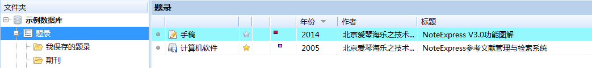文件->新建数据库，在合适的位置生成数据库
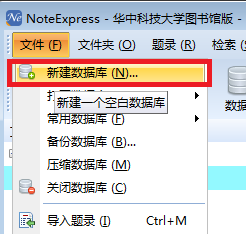如我的数据库名字就叫”论文“，保存在OneDrive文件夹下，能够实现云端同步，实现多终端NE使用。毕竟NE的数据库数据才是最重要的，软件随便哪个平台一装就好了，数据库在云端同步了，不管什么平台打开就能用了。
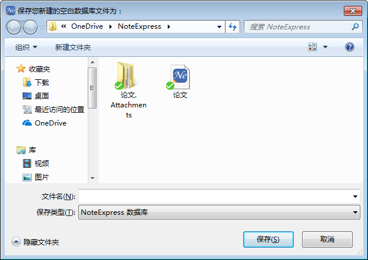
2.2 导入题录
2.2.1 方法1
寻找引用信息：常用的方法是在google学术搜索上搜索相应的文章名，如Timing channel ……，然后点击按钮，即会显示不同格式的引用信息。选择其中某种格式的引用信息复制即可。这里选择BibTex格式。原因：NE中很方便的能找到该格式的过滤器，其他的格式。。。无力吐槽
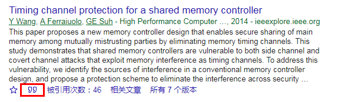
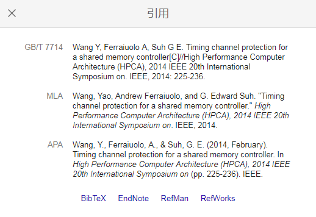导入题录：进入NE，在已经构建好的数据库下，右键，题录来源选择 来自剪贴版，过滤器选择 BibTex，即可成功导入题录信息。
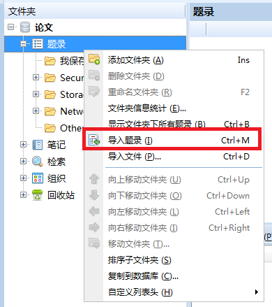
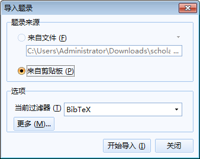
2.2.2 方法2
可以利用NE进行在线检索，如下图是在在线数据库CNKI中国知网中搜索Timing Channel得到的结果，可以勾选需要的题录并保存。
这个方法主要适用于要找的资料位于知网等一些没有被墙的数据库，如果想访问google scholar，需要设置代理服务器，但是学校版的NE开了shadowsocks的全局模式IP就不对了，实话说这个用法有点鸡肋。
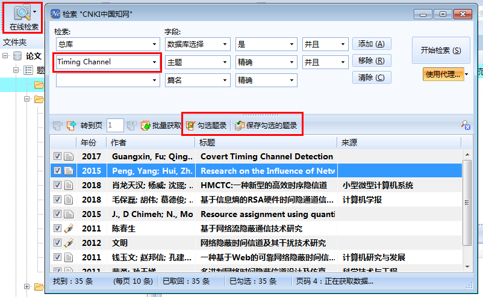
2.2.3 方法3
- 直接拖拽相应文件，如这里的NoteExpress功能图解pdf，到相应的目录下，即自动筛选文件名生成题录，这种情况下生成的题录通常都不是很全，一般只有一个标题。
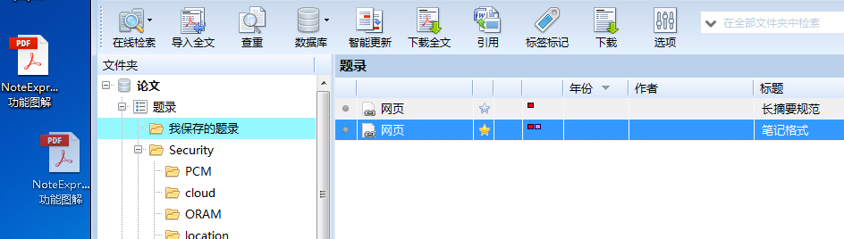
2.3 参考文献管理
2.3.1 插入引文，生成参考文献
- NE在安装时会自动在word中加载插件，若加载插件出现问题，可参考资料。
在管理参考文献时，首先点到NE的word插件
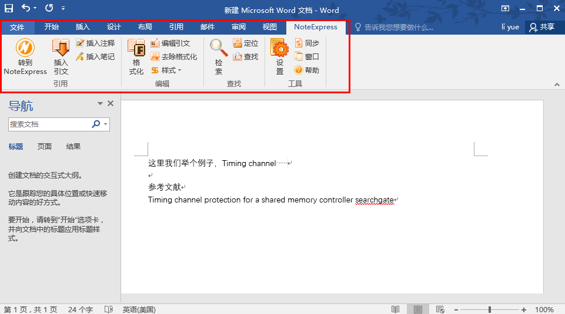例子：在例子两字后面插入上标[1]，对应的文献名为Timing channel protection for a shared memory controller searchgate。
- 第一步：在NE中选中对应文献题录，如下图
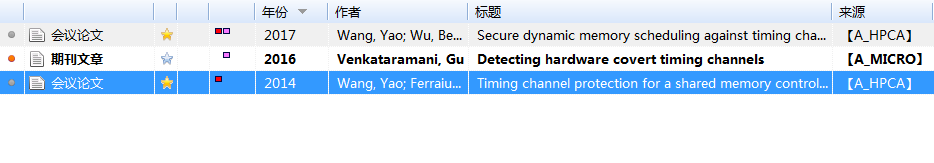 第二步：在word中点击插入引文
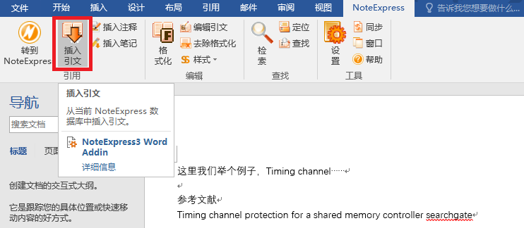可以看到，word中生成了文献角标，相应的参考文献内容，以及校对报告
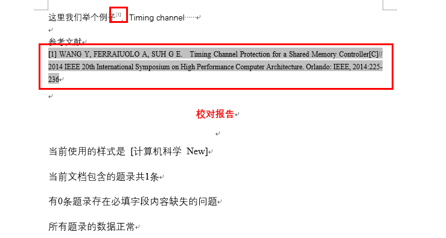
2.3.2 参考文献格式管理
通常情况下，写论文的时候，不同的会议或者期刊对参考文献的格式要求也是不同的，比如有些期刊要求多于三个的作者，只显示三个作者名，并加et al.或者等；有些期刊要求中国作者名表示为英文形式时，姓在前，名在后……诸如此类的参考文献格式要求需要修改样式管理器实现。
工具->样式->样式管理器，可以看到如图
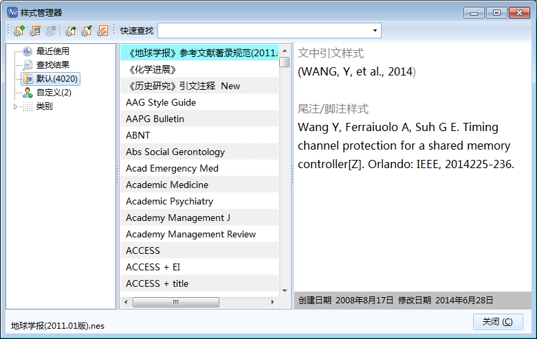上图的界面显示的是默认的样式管理器，比如上面有《地球学报》，即地球学报刊物的参考文献要求的格式。通常情况下一些刊物的样式都会有一些微调，所以有些还需要自己设置，这时就需要自定义。当然为了简化工作，我选择在已有的样式管理器上做修改。
选择一个与最终需要生成样式差距最小的版本，如下图选择了计算机学报，另存为新的样式，点击确定。
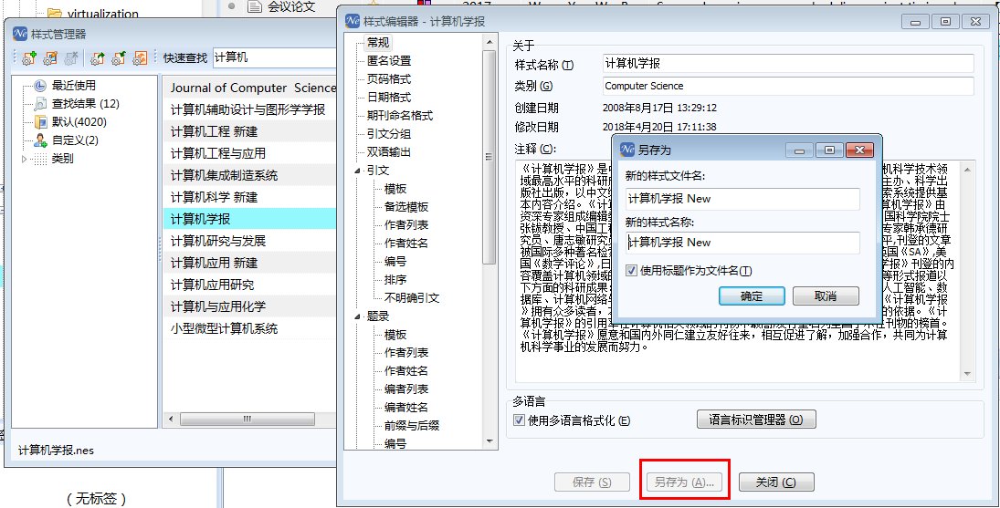在样式管理器自定义选项中，可以看到刚刚新生成的计算机科学样式，双击打开.
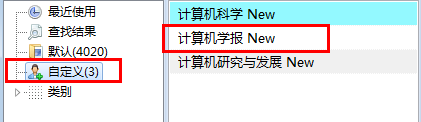- 主要介绍引文与题录的修改。
- 这里的引文对应word里插入到文字中的角标，比如上面的就是上标。
- 这里的题录对应生成的参考文献，比如上面的 [1] WANG Y, FERRAIUOLO A, SUH G E. Timing Channel Protection for a Shared Memory Controller[C]// 2014 IEEE 20th International Symposium on High Performance Computer Architecture. Orlando: IEEE, 2014:225-236 这一串文字
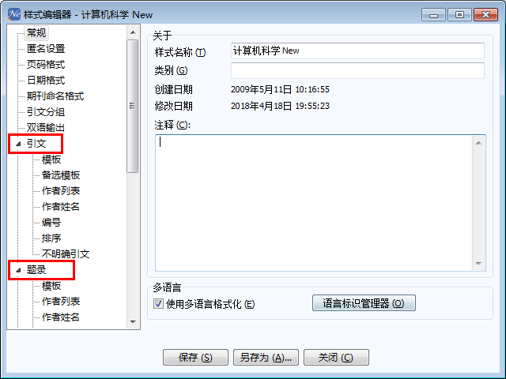
引文修改
- 引文修改，一般的引文都是上标形式，模板里面提供了下标形式，可以按需要设置，一般很少需要对引文做特殊的设置。
- 这里出现的English和Chinese，表示分别针对中英文文献进行设计输出参考文献格式。即英文文献使用一套模板输出参考文献，中文文献使用另外一套，使用哪套模板取决于文献的中英文类型，设置的时候需要注意。
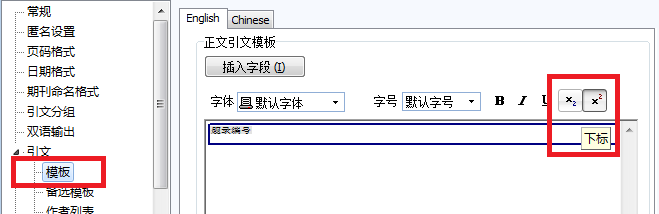
题录修改
- 模板设置
- 模板主要指定了输出的参考文献的模板、格式。比如这里指定了模板的题录类型有期刊文章、书、书的章节等。没有设置参考文献模板的题录在生成参考文献时，采用通用模板。若需要对某种题录类型的输出参考文件格式做设置，可如下图，将该类型选中后设置。
这出现的English和Chinese，表示分别针对中英文文献进行设计输出参考文献格式。即英文文献使用一套模板输出参考文献，中文文献使用另外一套，使用哪套模板取决于文献的中英文类型，设置的时候需要注意。
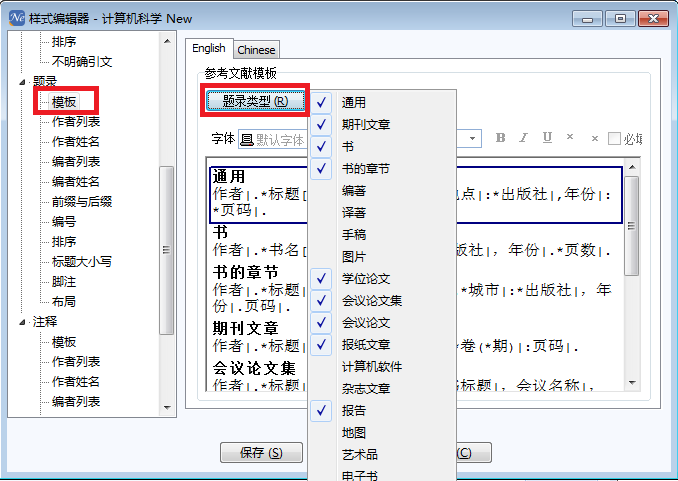某期刊对会议论文的参考文件格式要求：著者.析出文献题名 [C]//会议论文集.出版地：出版社，出版年：起止页码.
按照要求对会议论文的模板做修改，按照要求插入相应字段，至于|、*的使用，网上有相应资料，直接根据已有的模板依样画葫芦也可以。
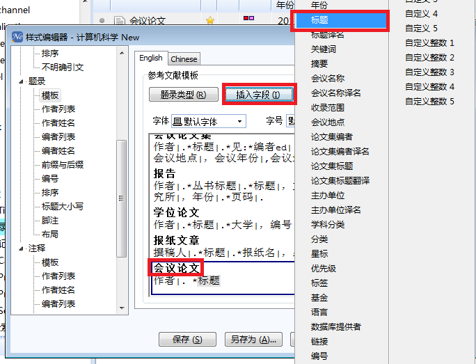著者.析出文献题名 [C]//会议论文集.出版地：出版社，出版年：起止页码. 格式要求可以转换成NE中相应的字段：作者|. 标题[C]//| 论文集标题|. 会议地点|: 主办单位|, 年份|:页数|.
- 作者列表设置
- 作者列表设置主要就是列出作者的个数，以及超过一定个数后的缩写形式，一般不怎么需要变动
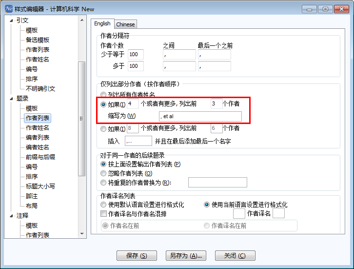
- 作者姓名设置
- 这里出现的English和Chinese，跟前面不一样！！！不一样！！！不一样！！！（吐槽日期2018-4-20，后面会不会改进不知道）也不知道程序员是怎么设计出来的，心累……
- 这里只有English下的设置是有效的，Chinese下的设置纹丝不动……红框中的部分对英文文献起作用，蓝色框中的部分对中文文献的英文形式起作用。
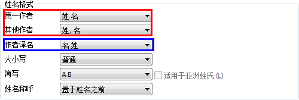
- 下面给出具体例子：
- 英文文献第一作者名为姓 名形式，其他作者名为姓，名形式
- 中文文献的英文形式：所有作者的姓名均表示为名 姓形式
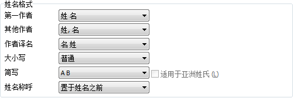 - [1] Wang Y, Ferraiuolo, A, Suh, G Ecest. Timing channel protection for a shared memory controller[Z]. Orlando: IEEE, 2014225-236.
- [2] Sasy S, Gorbunov, S, Fletcher, C. ZeroTrace: Oblivious memory primitives from Intel SGX[J]. IACR Cryptology ‘Archive Report. 2017, 549: 2017.
[3] J Wang, Y Jiang, Q Li, et al. 2017(05): 3-9.(In Chinese) 王进文，江勇，李琦，等. SGX技术应用研究综述[J]. 网络新媒体技术. 2017(05): 3-9.
至于中文名字的设置，好像设置不动……貌似也不需要特地去设置……